05/10/2016
Got back from the Brandywine house tonight (no accomodation that close to the observatory) and
wow! Looking at this picture doesn't do it justice - the dish is gigantic! The house (that little lump on the left) is so so close (I think
the property is one of the only ones bordering the observatory). I got to take a brief walk through but it's
a long ways from town and I left pretty late. I'll post the pictures tomorrow hopefully.
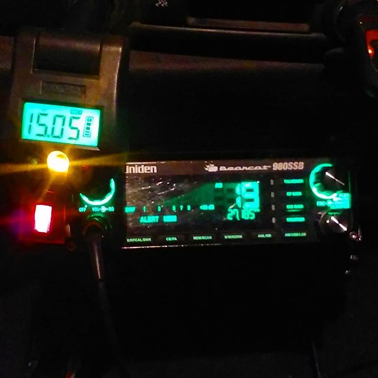
29/09/2016
On my way to a house that Samuel (the kinda-cool-kinda-racist guy that saved me
when my car broke down) mentioned was empty a ways out of town. It's apparently pretty
close to the Sugar Grove observatory, so I wont be able to get reception until I get back.
I'm excited to see the dish! I can see it off in the distance all the time but it's one thing
to conceptualise it, and a whole other thing to actually stand under it. I can't imagine what
the peope living there would have thought about it. Wary? Safe? Observed? Some of the people I
met in town moved here /to be in/ the NRQZ because they thought it would be healthier/safer for them
(there is a belief that EMF's and radio signals can cause some health problems apparently, so
living here eliminates that), but to be so close to the dish would be a totally different experience.

25/09/2016
Car breaking down in a foreign country at night: horrifying. Car
breaking down in front of a confederates house: also horrifying. Being
let into said confederates house and being eagerly shown around after
expressing an interest in vintage/collectors items and American homes: somehow
actually OK. Samuel and Tina were the lovely couple that found me on the road near
their house broken down and kindly (very, very kindly) let me hang out with them
until I (samuel) fixed the tire. You'd think with so many projects to do with cars/
car repair tools I could do it myself, but apparently I was 'shaking like a newborn deer'
so I let the professional handle it. In turn they showed me around their house (which they've
owned for 40 years now!) and all the attachments that come with it. I felt bad taking any
obvious pictures but I snagged this one of their patio/porch. That silver packet is an army
ration!
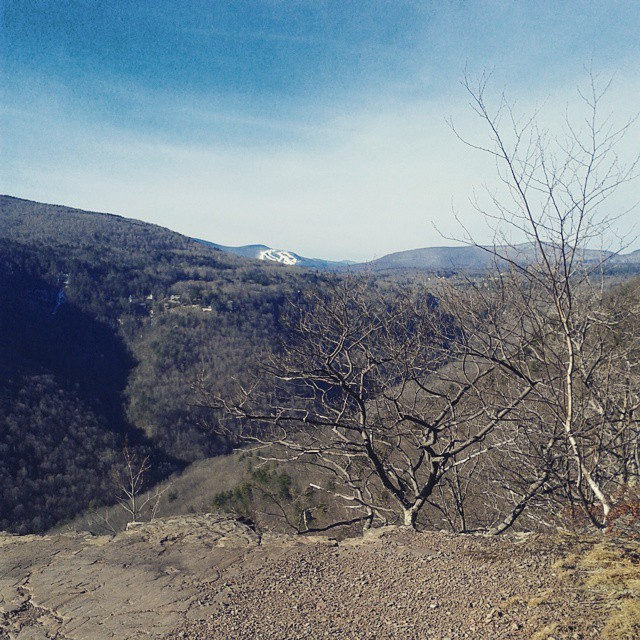
21/09/2016
Got to the top!
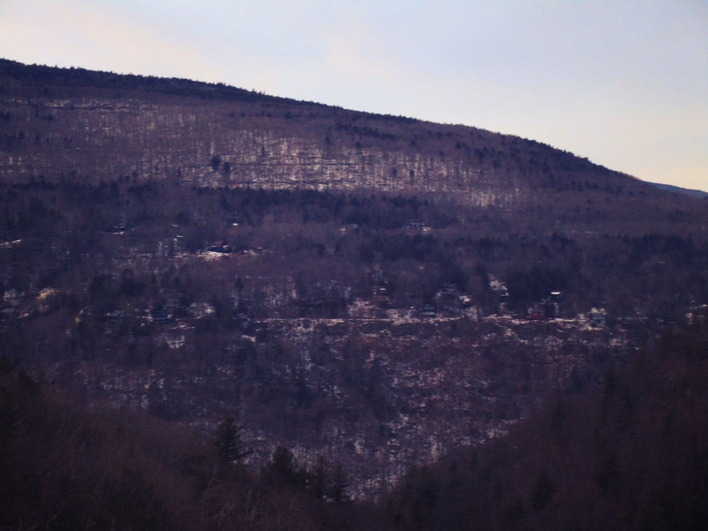
21/09/2016
My camera isn't doing it justice but the mountains here are STUNNING. A bit
blurry because I was trying to zoom in on the details. Oh yeah, and it's cold.

15/09/2016
Sorry for the radio silence (hah!), but I finally made it to Brandywine, WV!
Guide said this would be one of the last sunny days for a while so we made the most
of it and went for a drive. There are so many beautiful old houses out here,
some of them empty! I hope. Can't do any trespassing (don't tell Jon) but I get my own
hire car tomorrow so I can go trawling for one that's properly abandonded. Fingers crossed
for some stuff left behind!!
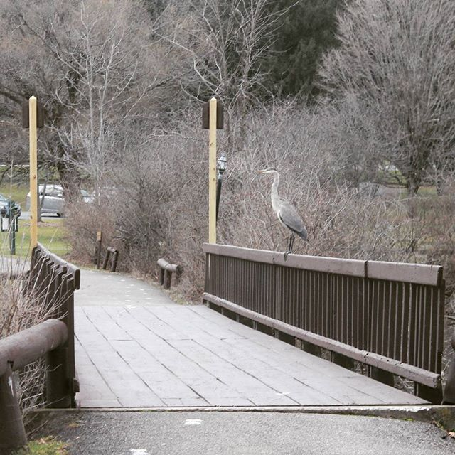
13/09/2016
Yo they got dinosaurs here.
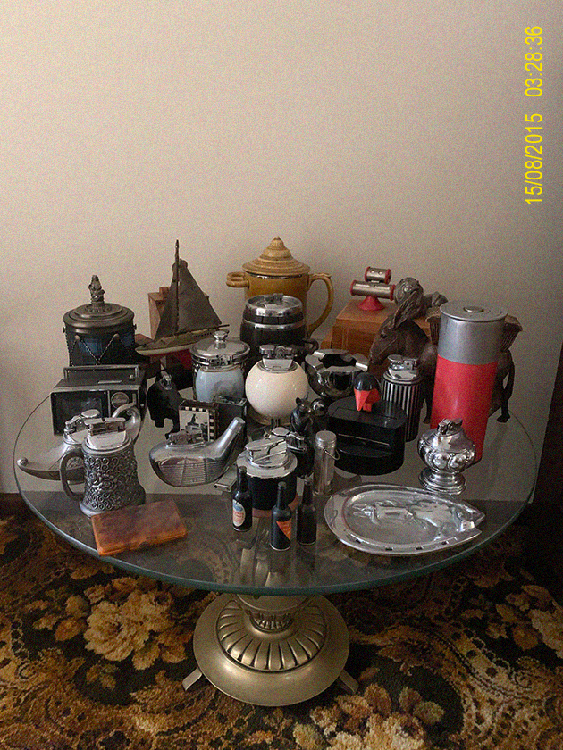
30/08/2015
Something I forgot to post before: the massive lighter collection (which is technically only about half of what they originally
had!) at the house in Spearwood. It's so interesting that lighters (ones that stayed on the table instead of in back pockets) were
so commonplace and on display that they became decorative objects. Notable examples: lighter which is also a tiny slide viewer
in the shape of a TV, a fairly nondescript lighter except for the fact that it has a calendar and a pewter lion lounding on it, one in
the shape of a genie's lamp, and a cigarette dispenser in the shape of a donkey (who dispenses cigarettes out of its ass).
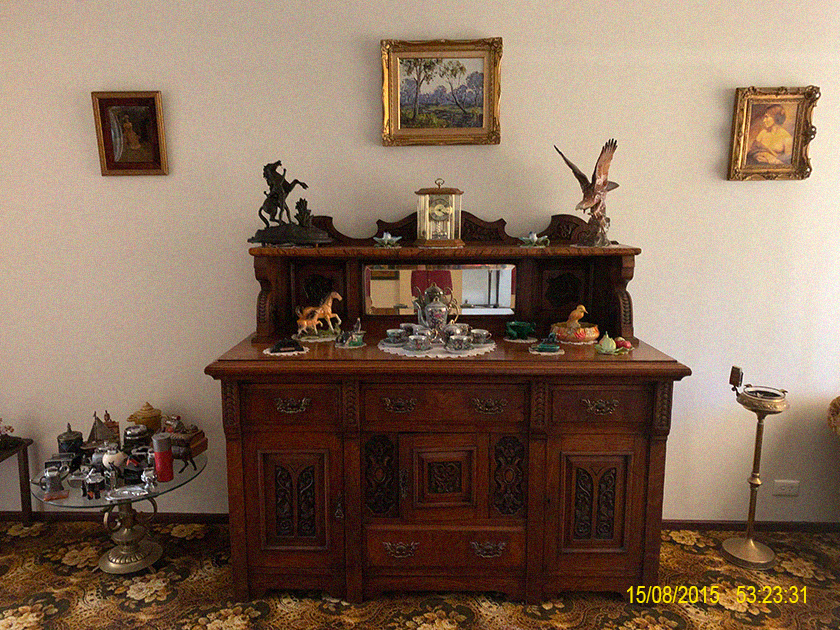
15/08/2015
Another beautiful cabinet arrangement in Spearwood. The people who own it used to collect
antiques but stopped a few years ago, and this equates to what they wanted to keep from their pretty sizable
collection. The cream of the crop! What's also cool is that you can see what's in vogue for collecting/what's
part of a set that would be of the same era: two jade dishes, two horse sculptures, two similarly framed paintints.
The clock is apparently one of three left from a collection of about 30. These things were EVERYWHERE in their prime.
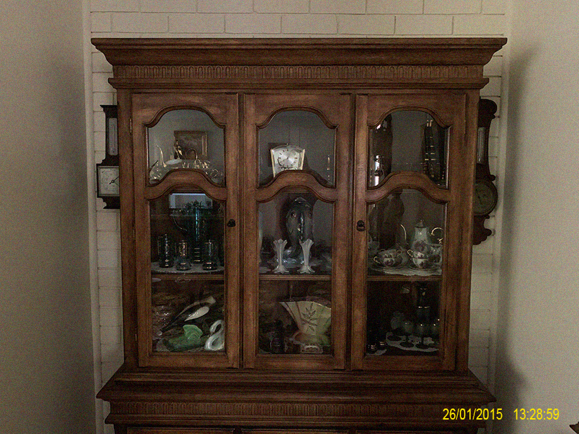
26/01/2015
Long time no post! Was visiting a garage sale when I got talking to the owner (Kath),
and she ended up showing me inside. This cabinet has been in her family for the last 40 years, but
the contents are even older. For a long time her mother used to fastidiously clean all the
dishware inside (a sign of a good household amongst neighbours I'm sure) but now exactly
what's inside is a little mysterious. Beyond what's immediately visible, Kath said she couldn't say
what's in there. She has plans on organising it and passing it down to grandkids if she gets the chance, or, if not,
giving it away. "As long as it goes somewhere" she said.
06/07/2014
Had a ball doing the house floorplan exercise on such a big scale, with special thanks for Phoebe for letting me use basically 80%
of the honours studios for the afternoon and for taking some candids :)
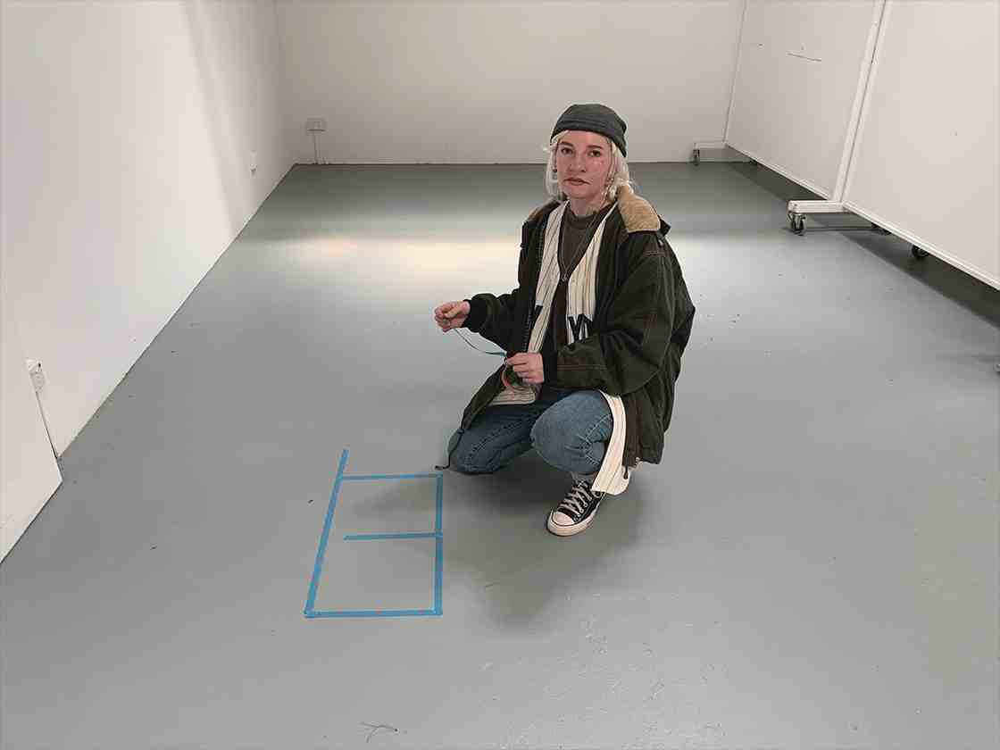
06/07/2014
Doing some large scale floorplan stuff this afternoon which, despite how I look, I'm actually pretty excited for. If you're out
and about today head down to the honours studios (212:109) and I can show you the ropes! Well - the tape.
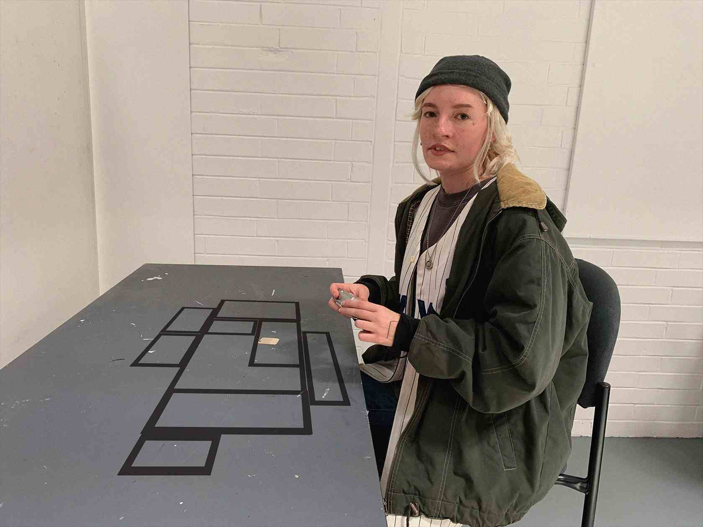
06/07/2014
More houseplans but this time a little bigger. I feel like a zoo animal getting enrichment so I don't go crazy - especially when
Phoebe comes around with the camera. Bark bark.
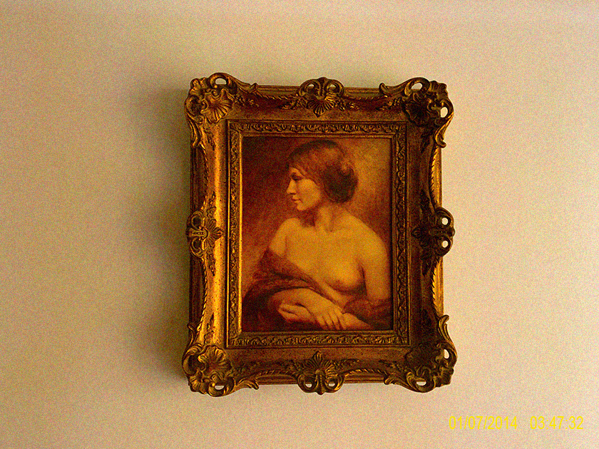
01/07/2014
Mamma mia.
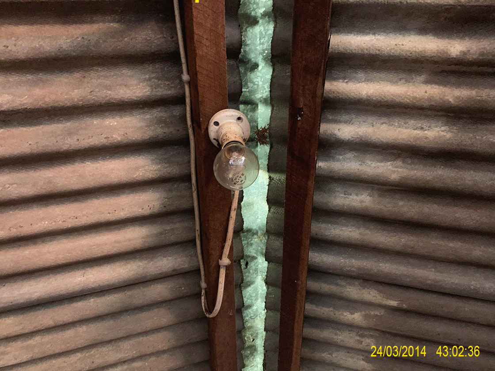
04/04/2014
Just liked the colours in this one. From Steve's shed.
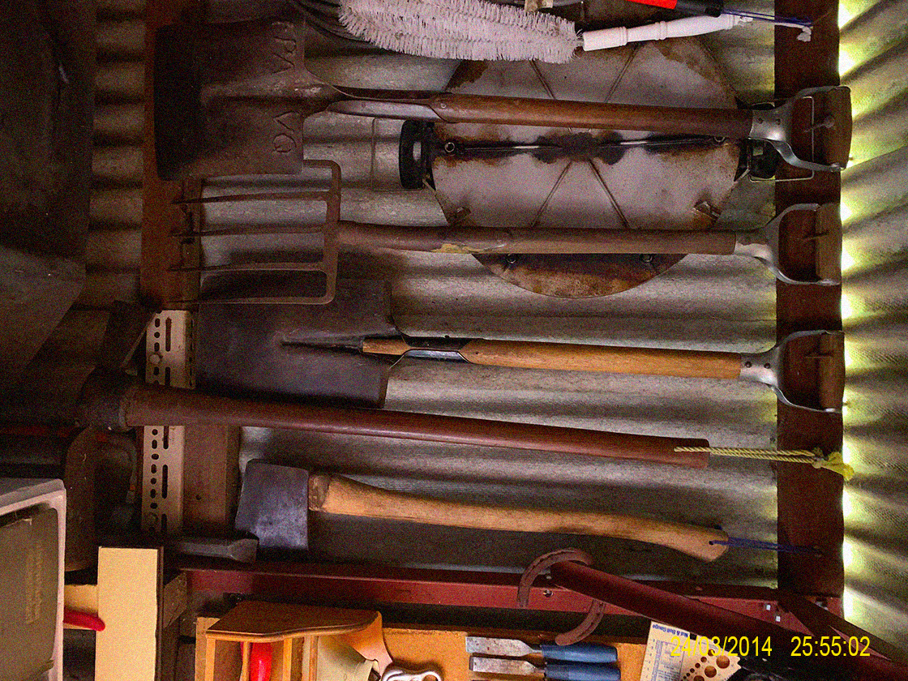
26/03/2014
Some more pictures from the shed: well-worn tools! I haven't spoken much to
Alex's granddad, but it's so interesting to see what you can discern from this arrangement:
Steve does lots of gardening/landscaping, but not everyday maintenance - there's a focus
on wholesale physical alterations going on (shovel, axe, pickaxe). I can only assume
the horseshoe is there for sentimental reasons, but it's curious that it doesn't have a hook/
hanging attachment.
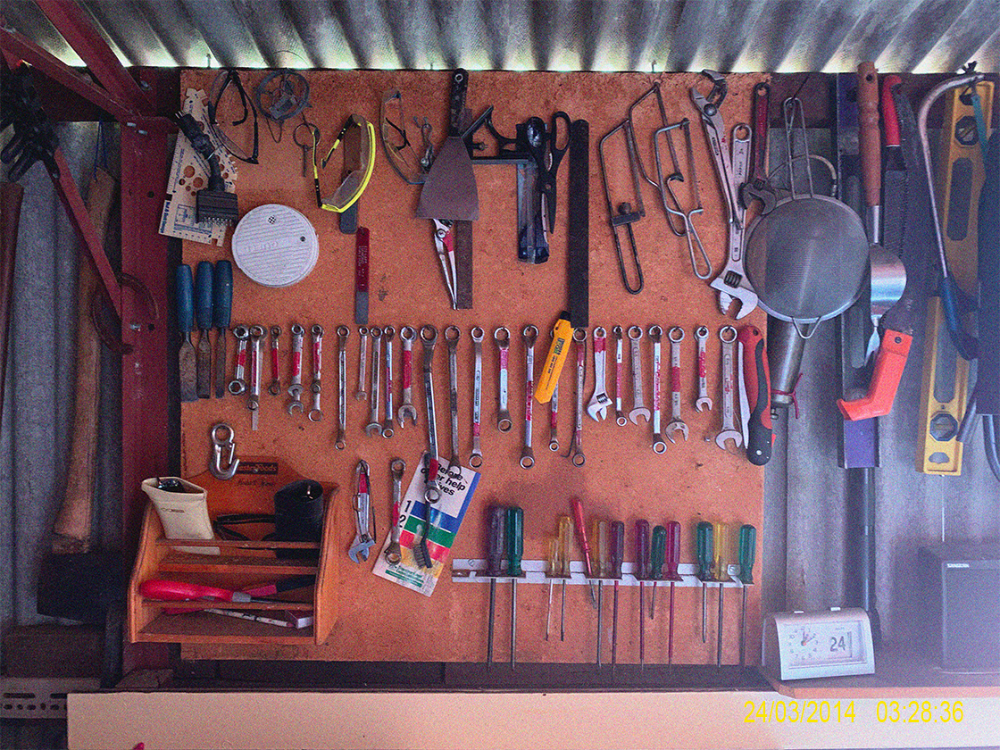
24/03/2014
Got to take a tour of Alex's granddad's shed today. What I found most interesting is
the method of organisation/categorisation of tools. All the wrenchs/screwdrivers are together
but they're not sorted by size (or type), and everything seems to be almost non-hierarchal.
A stanley knife hooked atop a wrench. Scissors next to a square edge. So much character in
a single pegboard.